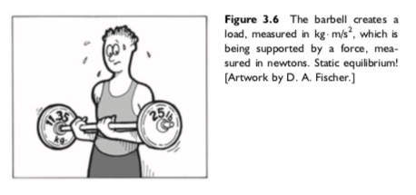
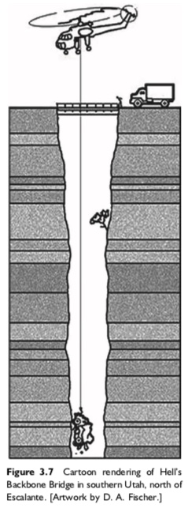
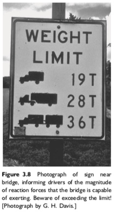
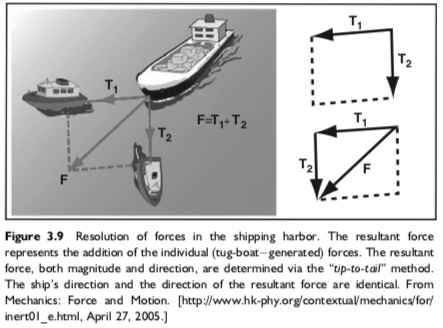
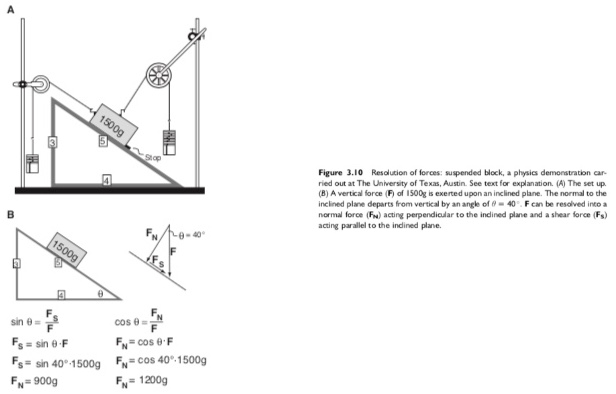
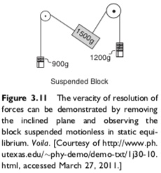
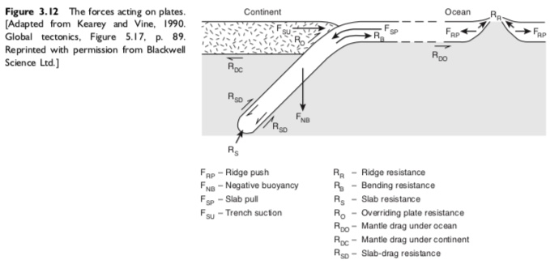

<!DOCTYPE html>
<html lang="en">

<head>
  <!-- Required meta tags -->
  <meta charset="utf-8" />
  <meta name="viewport" content="width=device-width, initial-scale=1, shrink-to-fit=no" />

  <!-- Bootstrap CSS -->
  <link rel="stylesheet" href="https://stackpath.bootstrapcdn.com/bootstrap/4.5.2/css/bootstrap.min.css"
    integrity="sha384-JcKb8q3iqJ61gNV9KGb8thSsNjpSL0n8PARn9HuZOnIxN0hoP+VmmDGMN5t9UJ0Z" crossorigin="anonymous">
  <link rel="stylesheet" type="text/css" href="custom.css">
  <title>Technical Document</title>
</head>

<body>
  <div class="container-fluid d-flex flex-column flex-grow-1 vh-100">
    <div class="row flex-grow-1" id="screen-display">
      <!--navbar-->
      <div class="col-md-3 col-xl-2 mx-0 px-0 mh-100 overflow-auto bg-light" id="nav-list">
        <nav class="navbar navbar-default navbar-static-top navbar-light bg-light navbar-expand-md d-flex flex-column fixed-left" id="navbar">
          <header id="top">
            <a style="text-decoration:none;" href="#Introduction">
              <h5>Force; <i>Structural Geology</i>, Davis et al. (2012)</h5>
            </a>
          </header>
          <button class="navbar-toggler" style="width:90%;" type="button" data-toggle="collapse"
            data-target="#navbarCollapse" aria-controls="navbarNavAltMarkup" aria-expanded="false"
            aria-label="Toggle navigation">
            <span class="navbar-toggler-icon"></span>
          </button>
          <div class="collapse navbar-collapse" id="navbarCollapse">
            <ul class="navbar-nav d-flex flex-column list-group-flush border-bottom">
              <li class="navbar-item list-group-item border-top">
                <a class="nav-link" href="#Definition_of_Force">Definition of Force</a>
              </li>
              <li class="navbar-item list-group-item">
                <a class="nav-link" href="#Mass_and_Weight">Mass and Weight</a>
              </li>
              <li class="navbar-item list-group-item">
                <a class="nav-link" href="#Forces_as_Vectors">Forces as Vectors</a>
              </li>
              <li class="navbar-item list-group-item">
                <a class="nav-link" href="#Reaction_Forces">Reaction Forces</a>
              </li>
              <li class="navbar-item list-group-item">
                <a class="nav-link" href="#Addition_and_Resolution_of_Forces">Addition and Resolution of Forces</a>
              </li>
              <li class="navbar-item list-group-item">
                <a class="nav-link" href="#Forces_in_the_Subsurface_World">Forces in the Subsurface World</a>
              </li>
              <li class="navbar-item list-group-item">
                <a class="nav-link" href="#Body_Forces_and_Electromagnetic_Forces">Body Forces and Electromagnetic
                  Forces</a>
              </li>
              <li class="navbar-item list-group-item">
                <a class="nav-link" href="#Forces_as_Loads">Forces as Loads</a>
              </li>
              <li class="navbar-item list-group-item">
                <a class="nav-link" href="#Plate_Tectonic_Forces">Plate Tectonic Forces</a>
              </li>
            </ul>
          </div>
        </nav>
      </div>

      <!--main-->
      <div class="col-md-9 col-xl-10 mh-100 overflow-auto" id="main-style" padding-right: 5rem;">
        <main id="main-doc">
          <section class="text-wrap" id="Introduction">
            <header class="h3 mt-3">Introduction</header>
            <article>
            <br />
            <p>
              This document is a short excerpt from
              <i>Structural Geology of Rocks and Regions (Third Edition)</i>
              by George H. Davis, Stephen J. Reynolds, and Charles F. Kluth.
              It will outline the principals of force, and explain some of
              their application to the field of structural geology.
            </p>
            </article>
          </section>

          <section class="text-wrap" id="Force">
            <h1>Force</h1>
            <hr />

            <section class="main-section text-wrap" id="Definition_of_Force">
              <header class="h3">Definition of Force</header>
              <br />
              <article>
              <p>
                Translations, rotations, distortions, and dilations are responses of rocks to stresses that are
                generated by forces. Force is a push or a pull that changes, or tends to change, the state of rest or
                state of motion of a body. Force can cause a body in a state of rest to accelerate, and can cause a
                moving body to accelerate or decelerate or change direction. Forces can create thrust (velocity
                increase), drag (velocity decrease), and torque (change in rotational speed). Where forces are unevenly
                distributed on a body, mechanical stresses can arise, and these mechanical stresses will tend to deform
                the body. Pulling forces create tension; pushing forces create compression.
              </p>
              <p>
                Force (F) is a vector quantity marked both by direction and magnitude. If several different forces act
                on a given body, the net effect can be determined if the direction and magnitude of each of the forces
                are known. The basic unit of force is the newton (N). A newton is the force required to impart an
                acceleration of one meter per second per second to a body of one kilogram mass. Only a force can cause
                something to move that had been stationary. Only a force can cause something to change its speed. Only a
                force can cause something to change its course of travel. A mass of 1 kg here on the earth’s surface
                exerts a force of ~9.8 N downward. Because on earth 1 N is the force of earth’s gravity acting on a mass
                of ~100 g, you experience the force of ~1 N when an apple falls from a tree and hits you on the head.
              </p>
              <p>
                Newton, through his first law of motion, described the concept of force in this way: an object at rest
                will remain at rest and an object in motion will continue in motion with a constant velocity unless it
                experiences a net force, in which case the object will accelerate or decelerate. A net force arises when
                forces are not balanced. In his second law of motion, Newton observed that the acceleration of an object
                is directly proportional to the net force on it, and inversely proportional to the mass of the object.
                The algebraic definition of force is, in fact, based upon mass (m) and acceleration (a):
              </p>
              <div class="container container-border">
                <code>
              force = mass &times; acceleration<br>
              F = ma
            </code>
              </div>
              <p>Mass and acceleration are reciprocal.</p>
              <div class="container container-border">
                <code>
              m<sub>1</sub>a<sub>1</sub> = m<sub>2</sub>a<sub>2</sub>
            </code>
              </div>
              <p>
                Thus, if a given force, F, accelerates a 1 kg object by 3 m/s<sup>2</sup>, it will accelerate a 2 kg
                object by 1.5 m/s<sup>2</sup>, for:
              </p>
              <div class="container container-border">
                <code>
              1kg &times; 3m/s<sup>2</sup> = 2kg &times; 1.5m/s<sup>2</sup>
            </code>
              </div>
            </article>
            </section>

            <section class="main-section text-wrap" id="Mass_and_Weight">
              <header class="h3">Mass and Weight</header>
              <br />
              <article>
              <p>
                The mass (m) of a body is the amount of material the body contains. The mass of a body will be expressed
                here in SI units. Mass can be readily calculated if volume and density are known. Volume (V ) is the
                space occupied by the mass and is expressed commonly in units of cubic centimeters or cubic meters.
                Density (ρ) is the measure of the mass of a body per unit volume, and is most commonly expressed in
                grams per cubic centimeter or kilograms per cubic meter. The relationship among mass, volume, and
                density is:
              </p>
              <div class="container container-border bg-light">
                <code>
                m = &rho;V<br>
                &rho; = m/V
              </code>
              </div>
              <p>
                Mass causes a body to have weight in a gravitational field, but mass and weight are not the same. The
                weight (W) of a body of a given mass is the magnitude of the force of gravity acting on the mass, and it
                varies according to location. The force of gravity acting on the mass of a body on the moon will be less
                than the force of gravity acting on the same body on Earth. The intensity of the Earth’s gravity field
                under standard conditions is 9.8 N/kg.
              </p>
              <p>
                Pumping iron in the local gym, the athlete shown in Figure 3.6 is demonstrating the relation between
                weight and force. The weight of the 22.7 kg mass is solved with:
              </p>
              <div class="container container-border">
                <code>22.7 kg &times; 9.8 m/s<sup>2</sup> = 222 N</code>
              </div>
              <p>
                To support that weight, there is a need to exert a force of 222 N. Actually lifting the mass (i.e.,
                giving it an upward acceleration) requires a force greater than 222 N.
              </p>
              
                </article>
            </section>

            <section class="main-section text-wrap" id="Forces_as_Vectors">
              <header class="h3">Forces as Vectors</header>
              <br />
              <article>
              <p>
                The vector character of forces permits them to be added and subtracted using principles of vector
                algebra, and this in turn makes it possible to evaluate whether forces on a body are in balance. Force
                vectors act at point masses in bodies, such as rock bodies.
              </p>
              </article>
            </section>

            <section class="main-section text-wrap" id="Reaction_Forces">
              <header class="h3">Reaction Forces</header>
              <br />
              <article>
              <p>
                We are aware that forces can be at work without producing any visible conse- quence. Consider, for
                example, a truck about to cross the tiny, narrow bridge at Hell’s Backbone north of Escalante in
                southern Utah. The bridge is positioned over a virtual “Gothic” chasm (Figure 3.7). The prudent truck
                driver, no matter whether driving a 4-wheeler, a 6-wheeler, or an 8-wheeler, will pause to read the
                signage before crossing (Figure 3.8). If the load and number of contact points (tires) are in right
                relationship, the driver will feel confident during the crossing because its weight (W) is balanced by
                the reaction force (R) due to the strength of the bridge support system. The truck therefore will not
                sink into the bridge or break through the bridge. We love the signage at Hell’s Backbone (see Figure
                3.8), because it not only introduces us to thinking of force as a load, for example, 19 tons, 28 tons,
                36 tons, but also introduces us to the notion that the capacity to deform depends upon load per unit
                area, i.e., the force intensity, or shall we say “load per unit tire”. If the load reaches 4.5 tons per
                tire, beware!
              </p>
              <div class="row d-flex align-items-start justify-content-center">
              
              
              </div>
              </article>
            </section>

            <section class="main-section text-wrap" id="Addition_and_Resolution_of_Forces">
              <header class="h3">Addition and Resolution of Forces</header>
              <br />
              <article>
              <p>
                In situations where two or more forces are exerting their effects on a body, it is possible—because
                forces are vectors—to resolve the two (or more) forces into a single resultant force. The force vectors
                can be added. Figure 3.9 shows two tugboats pulling a cargo ship. The resultant force is determined
                (magnitude and direction) using the “tip-to-tail” method. The direction of the resultant force is the
                direction in which the ship is moving at the instant of time portrayed.
              </p>
              
              <p>
                There is particularly ingenious physics laboratory demonstration that speaks to resolution of forces.
                The demonstration is carried out at any number of physics departments, including University of Texas at
                Austin, where the experiment is called “the suspended block demonstration.” The setup is a wooden
                triangular framework, the hypotenuse of which is an inclined plane (Figure 3.10A). The normal to the
                inclined plane departs from vertical by an angle of θ = 40. The lengths of the sides of the triangle
                are in the ratio of 3 to 4 to 5. A 1500g block is placed on the steeply inclined plane, held in place by
                a simple “stop” and connected by wires through pulleys to hooks onto which weights can be placed (see
                Figure 3.10A). This block exerts a force (F) of 1500g on the inclined plane. The first objective of the
                demonstration lab is to calculate force components generated on the inclined plane by the 1500g block,
                and in particular the force component perpendicular (normal) to the inclined plane (i.e., the normal
                force, F<sub>N</sub>) and the force component parallel to the inclined plane (i.e., the shear force, FS)
                (Figure 3.10B). The arithmetic is straightforward: the normal force (F<sub>N</sub>) is the product of
                the F x cos θ, and the shear force (F<sub>S</sub>) is the product of F x sin θ (see Figure 3.10B).
              </p>
              <div class="row d-flex align-items-start justify-content-center">
                <div class="px-1">
                  
                </div>
                <div class="px-1">
                  
                </div>
              </div>
              <p>
                The second objective is to demonstrate that the block can be held in static equilibrium by imposing
                countervailing normal forces and shear forces through adding just the right weights to the hooks. For
                suspense, this can be achieved in two steps (1) balancing the shear force and removing the “stop;” and
                then (2) balancing the normal force and removing the inclined plane. If all goes well, the block will
                not twitch. Instead it will be suspended motionless in space (Figure 3.11).
              </p>
              </article>
            </section>

            <section class="main-section text-wrap" id="Forces_in_the_Subsurface_World">
              <header class="h3">Forces in the Subsurface World</header>
              <br />
              <article>
              <p>
                In the generally slow-moving tectonic world of structural geology, we largely envision forces acting on
                and within bodies that are at a state of rest or in very slow motion. We will most commonly be dealing
                with situations where rock bodies essentially are at rest, and forces appear to be balanced. When net
                forces produce intensities that cause deformation, they trigger accelerations that are generally of two
                kinds: (1) unimaginably slow acceleration of the larger geo- logic unit as a whole, such as a major
                tectonic plate that undergoes an increase in velocity from 6 cm/yr to 7 cm/yr over hundreds or thousands
                of years; or (2) incredibly fast, short-lived accelerations of parts of the larger body, such as
                fault-induced shifting of rock in the briefest period of time (seconds or fractions of seconds),
                achieving huge accelerations. A stunning and devastating example of the latter was the first phase of
                the Indian Ocean earthquake (December 26, 2004), when within 100 seconds the seafloor ruptured at a
                velocity of 10,000 km/h over a length of 400 km, producing on average ~1520 m of vertical displace-
                ment. It was this magnitude of fault displacement that lifted a huge column of seawater and triggered
                the ravaging tsunami.
              </p>
              <p>
                Prior to such seismic events, plate forces commonly build slowly until the strength of the crust, or
                some part of it, is overcome, thus triggering internal adjustments involving translation, rotation,
                distortion, or dilation. Some of these adjustments are recoverable when the forces are removed, namely
                the elastic component. Other adjustments result in a permanent damage that is non-recov- erable, thus
                creating the possibility of a structural geologic record of the action of forces.
              </p>
              </article>
            </section>

            <section class="main-section text-wrap" id="Body_Forces_and_Electromagnetic_Forces">
              <header class="h3">Body Forces and Electromagnetic Forces</header>
              <br />
              <article>
              <p>
                There are two fundamental classes of forces that affect geologic bodies: body forces and contact forces.
                Body forces act on the mass of a body in a way that depends on the amount of material in the body but
                independent of the forces created by adjacent surrounding materials (Means, 1976; Twiss and Moores,
                1992). Contact forces are pushes or pulls across real or imaginary surfaces of contact, such as a fault
                between adjacent parts of a rock body (Means, 1976).
              </p>
              <p>
                From a structural geologic perspective, the most important body forces are gravitational force and
                electromagnetic force. The force of gravity is ultimately responsible for many geologic actions, such
                as:
              <ul>
                <li>the downhill flow of lava</li>
                <li>glaciers</li>
                <li>rock slides</li>
                <li>rock avalanches</li>
                <li>debris flow</li>
                <li>down-basin slumping of wet sediments</li>
                <li>vertical ascent of low-density buoyant magmas</li>
                <li>alt domes, and mud diapers</li>
                <li>settling of heavy crystals within certain magmas (such as the Palisades Sill on the New Jersey
                  bluffs of the Hudson River)</li>
                <li>the very movement of plates</li>
              </ul>
              </p>
              <p>
                The body force called “gravity” can create structural deformation at a scale that is commonly large and
                visible. In contrast, electromagnetic forces are body forces whose structural geologic presence dwells
                in submicroscopic realms. Electromagnetic forces are among the significant forces that must be overcome
                to produce deformation (Serway, 1990). Electromagnetic forces hold individual minerals intact, and thus
                they hold rocks together (see Chapter 4, Deformation Mechanisms and Microstructures). When contact
                forces overwhelm electro- static forces at some location in a mineral, the structure of the lattice can
                be disturbed through deformation at the submicroscopic scale. In this way, hard rocks can be forced to
                behave as if they were soft.
              </p>
              </article>
            </section>

            <section class="main-section text-wrap" id="Forces_as_Loads">
              <header class="h3">Forces as Loads</header>
              <br />
              <article>
              <p>
                Load is a prominent word in the definition of contact force, and it presents the need to introduce yet a
                second way of describing the effect of a force. The first way, which we have learned, is to express the
                effect of a force in terms of how much acceleration the contact force will impart to the mass of a body
                in a given time (e.g., a hockey stick slapping a puck). The second way is to describe the effect of a
                force is in terms of how much weight it can support (i.e., how much load it can resist) (Price and
                Cosgrove, 1990). In this case, the weight is called the load.
              </p>
              <p>
                Since force equals mass times acceleration, and weight equals mass times acceleration due to gravity, it
                follows that there is a close relationship between force and weight. We sometimes miss that connection
                because the units in which load and weight are expressed are typically reported in shorthand. For
                example, a load or weight of 10,000 kg actually means 10,000 kg 3 m/s<sup>2</sup>, which is the same as
                10,000 N.
              </p>
              <p>
                The loads that create contact forces can arise in any number of ways, some of which are secondary
                effects of body forces. Suppe (1985) identified three main mechanisms of loading, each of which produces
                contact forces: gravitational loading, thermal loading, and displacement loading. Gravitational loading
                is an omnipresent mechanism, one example of which is the effect of the weight of sediments accumulating
                in a sedimentary basin. Such a sedimentary column generates forces at depth that contribute to
                compaction and lithification. Through thermal loading, the heating or cooling of rocks creates forces in
                rocks that, because of their confinement, are not able to expand or contract. Imagine the complex
                pattern of forces generated by heating a confined mass of tightly interlocking rocks and minerals, each
                of which has a different capacity for thermal expansion. Displacement loading generates forces through
                mechanical disturbance of rocks. Examples include the collision of plates, regional bending and arching,
                and the shouldering aside of country rock by an intruding magma or an impacting asteroid.
              </p>
              </article>  `   
            </section>

            <section class="main-section text-wrap" id="Plate_Tectonic_Forces">
              <header class="h3">Plate Tectonic Forces</header>
              <br />
              <article>
              <p>
                Advances in the understanding of the origin of plate forces have issued from the research of Forsyth and
                Uyeda (1975), Elasser (1968), Bott (1982), and Kearey and Vine (1990). Park (1988) nicely summarized
                much of this work. The principal forces and resistances that control plate movements have inter- esting
                names, such as ridge push, slab pull, and slab suction. To picture the whole array of forces and
                resistances, let us imagine a spreading center that is feeding out new oceanic lithosphere (Figure
                3.12). The new oceanic lithosphere at the ridge thickens outward as it ages and cools, and the whole
                plate moves laterally across a vast expanse before descending into a subduction zone. Beyond the
                subduction zone, in this example, is continental lithosphere belonging to a different plate.
              </p>
              <p>
                The origin of ridge push along spreading centers is the gravitational “head” created by topography,
                which reflects the warm buoyant character of the lith- osphere along the ridge. Ridge push is applied to
                the separating plates, causing the plates to move (see Figure 3.12). Resistance to movement is manifest
                in shallow-focus earthquakes that originate above asthenosphere in thin brittle lithosphere. Ridge push
                generates compression.
              </p>
              <p>
                A mantle drag resistance operates on the underside of a moving plate (see Figure 3.12), like the drag on
                the underside of a barge moving on a river. Kearey and Vine (1990) point out that the mantle drag
                beneath continental lithosphere is approximately eight times greater than the mantle drag beneath
                oceanic lithosphere, probably because of the deep lithospheric roots of con- tinents (Jordan, 1988).
                Where the oceanic plate enters the subduction zone, it must flex to get in (see Figure 3.12). The
                resistance to flexing is a bending resistance, which slightly impedes plate motion.
              </p>
              <p>
                Other forces arise when oceanic lithosphere is, in effect, pulled down a subduction zone. Slab pull is
                caused by negative buoyancy, created by the density contrast between the cold slab going down and the
                hot mantle into which the slab descends. A distinction is made between the negative buoyancy force,
                which acts vertically, and slab pull, which acts parallel to the descending slab (see Figure 3.12). As
                you might expect, there is resistance to the descent of a slab of oceanic lithosphere. First of all,
                there is a slab resistance force ori- ented perpendicular to the leading edge of the slab as it descends
                (see Figure 3.12). In addition, the upper and lower surfaces of the descending slab are marked by slab
                drag. Slab resistance is actually 53 to 83 larger than slab drag.
              </p>
              <p>
                The overriding plate above the subduction zone imposes additional dynamic factors. For example, trench
                suction is a force that tends to drive the overriding plate into the trench at a faster rate (see Figure
                3.12). Tension results. There are debates over the exact origin, but the effect is expressed in a number
                of ways, including collapse of the overriding plate into the trench and backarc spreading. In contrast,
                the strength and velocity of movement of the overriding plate create overriding plate resistance (see
                Figure 3.12). It is this resistance that gives rise to major earthquakes at the active plate margin.
              </p>
              
              <p>
                The actual state of affairs in the descending slab depends on a number of factors (Figure 3.13). If slab
                pull exceeds the combination of slab resistance and overlying plate resistance, the slab is forced into
                a state of tension. If the opposite holds, the slab finds itself in a state of length-parallel
                compression. The ‘proof of the pudding’ lies in the earthquake record within descending slabs. The
                earthquake records can be used to monitor slab-parallel extension versus slab-parallel shortening as a
                function of depth (see Figure 3.13).
              </p>
              <p>
                If the resisting forces are relatively low at the location of subduction zones, both the slab-pull
                forces and the suction forces will produce tension in the adjacent lithosphere. This result is in some
                ways counterintuitive and should make us cautious about trying to equate convergence-related subduction
                with collision and compression. Recall that ridge-push forces at spreading centers, induced by buoyancy
                forces, generate compression. There is a certain irony in the generation of compressional forces at
                spreading centers and tensional forces in subduction zones (Park, 1988).
              </p>
              <br />
              <a href="#Introduction" class="btn btn-light back-to-top"
                style="display:block; margin-left:auto; margin-right:auto;">Back to Top</a>
                </article>
            </section>
          </section>
          </section>
        </main>
      </div>
    </div>


    <!-- Optional JavaScript -->
    <!-- jQuery first, then Popper.js, then Bootstrap JS -->
    <script src="https://code.jquery.com/jquery-3.5.1.slim.min.js"
      integrity="sha384-DfXdz2htPH0lsSSs5nCTpuj/zy4C+OGpamoFVy38MVBnE+IbbVYUew+OrCXaRkfj"
      crossorigin="anonymous"></script>
    <script src="https://cdn.jsdelivr.net/npm/popper.js@1.16.1/dist/umd/popper.min.js"
      integrity="sha384-9/reFTGAW83EW2RDu2S0VKaIzap3H66lZH81PoYlFhbGU+6BZp6G7niu735Sk7lN"
      crossorigin="anonymous"></script>
    <script src="https://stackpath.bootstrapcdn.com/bootstrap/4.5.2/js/bootstrap.min.js"
      integrity="sha384-B4gt1jrGC7Jh4AgTPSdUtOBvfO8shuf57BaghqFfPlYxofvL8/KUEfYiJOMMV+rV"
      crossorigin="anonymous"></script>
    <script src="https://cdn.freecodecamp.org/testable-projects-fcc/v1/bundle.js"></script>
  </div>
</body>

</html>